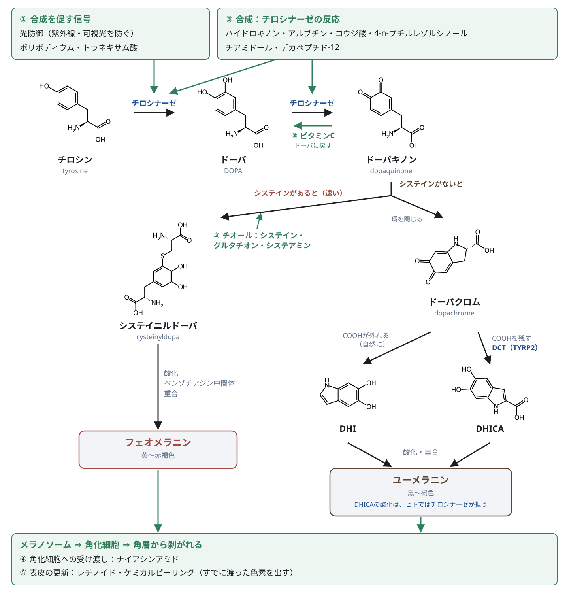
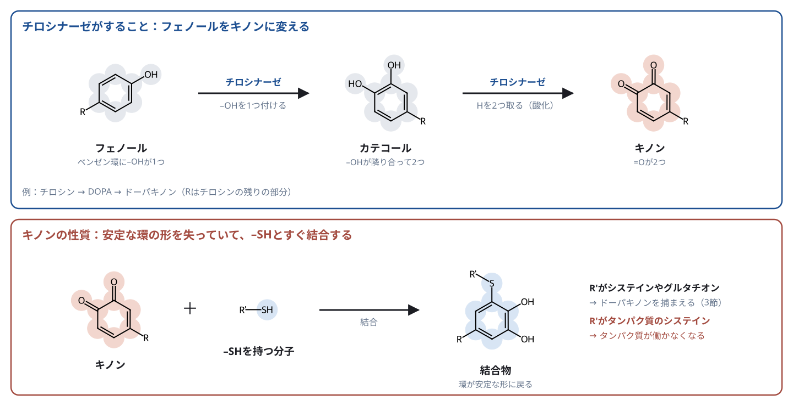
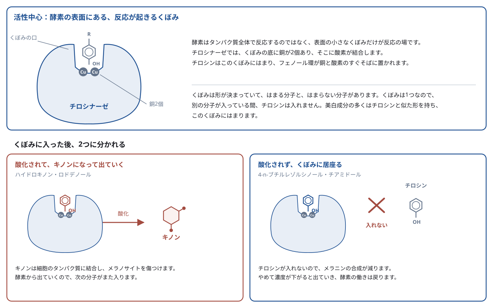
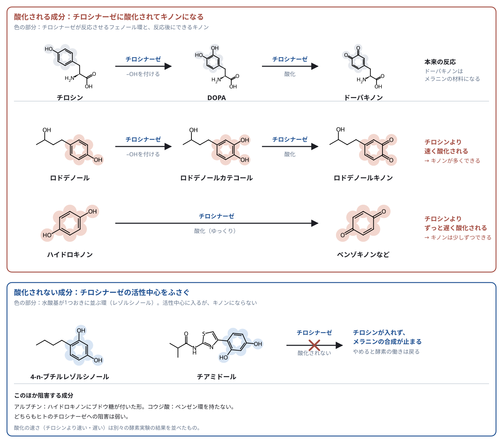
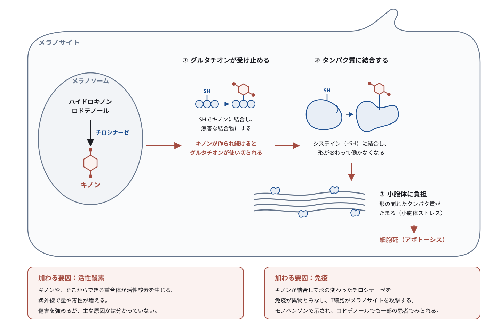
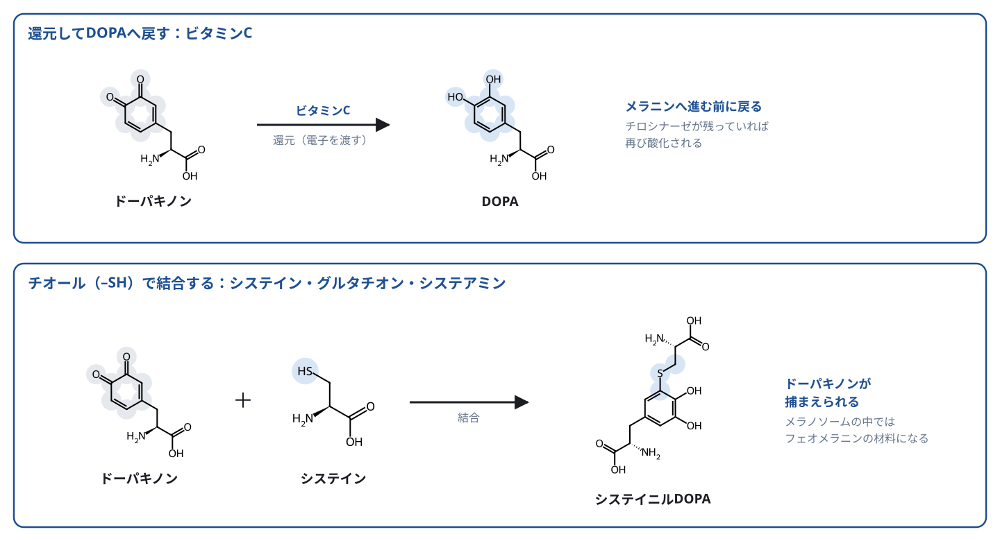

美容皮膚科 ／ 外用
美白の生化学――外用と内服
公開 2026-11-06
メラノサイトと色素形成で見たように、メラニンはメラノサイトのメラノソームの中で、チロシナーゼが始める反応から作られ、角化細胞へ渡されて表皮に広がります。美白に使われる成分は、この流れのどこかに作用します。
この章の一言
美白成分は、メラニンができて表皮に残るまでの、どの段階に作用するかで分かれます。 作用する段階が違えば、効き方も、効果が出るまでの時間も、注意すべき副作用も変わります。
1 色素ができて表皮に残るまでの、どこに作用するか
メラニンが表皮の色として見えるまでを、メラノサイトと色素形成の作用点の図と同じ①〜⑤の段階に分けます。

| 段階 | そこで起きること | 色素を減らす成分・治療 | 節 |
|---|---|---|---|
| ① 合成を促す信号 | 紫外線・可視光・炎症を受けた角化細胞が、メラノサイトに合成を促す信号を送る | 光防御（紫外線・可視光を防ぐ）、ポリポディウム・レウコトモス（内服）、トラネキサム酸（外用・内服） | 4 |
| ② メラノソームの成熟 | メラノソームに酵素が運び込まれ、合成できる状態に整う | 主な標的とする成分は、現時点でない | — |
| ③ 合成：チロシナーゼの反応 | チロシナーゼがチロシンをDOPAに、DOPAをドーパキノンに酸化する。メラニンの量を決める中心の反応 | ハイドロキノン、アルブチン、コウジ酸、4-n-ブチルレゾルシノール、チアミドール、デカペプチド-12 | 2 |
| ③ 合成：ドーパキノンから先 | 反応性の高いドーパキノンが、酵素なしでもメラニンへ進む | ビタミンC、システイン、グルタチオン、システアミン（外用・内服） | 3 |
| ④ 角化細胞への受け渡し | メラニンを含むメラノソームが、樹状突起から角化細胞へ渡される | ナイアシンアミド | 5 |
| ⑤ 表皮の更新 | メラニンを受け取った角化細胞が角層へ上がり、剥がれ落ちる | レチノイド、ケミカルピーリング | 5 |
①〜③に作用する成分は、これから作られるメラニンを減らします。日本の医薬部外品で認められている美白の効能が「メラニンの生成を抑え、しみ、そばかすを防ぐ」なのも、この作用を表しています。日本化粧品工業連合会「化粧品等の適正広告ガイドライン」2020年版 すでに角化細胞に渡ったメラニンは、その細胞が角層へ上がって剥がれ落ちるまで表皮に残ります。基底層で生まれた角化細胞が角層から剥がれるまでの時間は、測定法によって約4週から6週以上と幅があります。Weinstein・Van Scott, 1965、Bergstresser・Taylor, 1977 美白成分の効果を評価するのに数か月かかるのは、このためです。
同じ成分を塗っても飲んでも、作用する段階は同じです。違うのは、作用点まで届くかどうかと、ヒトで効果を確かめた試験があるかどうかです。この違いは6節でまとめます。
2 チロシナーゼに作用する成分
チロシナーゼは、フェノールをキノンに変える
チロシナーゼ（tyrosinase）は、活性中心に2個の銅を持つ酵素です。ベンゼン環に水酸基（–OH）が1つ付いたフェノールに、もう1つ–OHを付けてカテコールにします。続けてカテコールから水素を2つ取り去り（酸化し）、キノンにします。チロシン → DOPA → ドーパキノンは、この2段階の反応です。

キノン（quinone）は、環の炭素に酸素が二重結合（=O）で2つ付いた形です。ベンゼン環が本来持つ安定な形を失っているため、電子を多く持つ相手とすぐ反応し、反応すると環は安定な形に戻ります。特に–SH（チオール基）とは速く結合します。この性質が、美白にも傷害にも関わります。
- ドーパキノンに、システインやグルタチオンの–SHが結合すると、ドーパキノンはメラニンへ進めなくなります（3節）。
- 美白成分からできたキノンが、メラノサイトのタンパク質の–SHに結合すると、タンパク質が働かなくなります（下で説明）。
反応が起きる場所は、酵素の表面のくぼみ
酵素はタンパク質全体で反応するのではなく、表面にある小さなくぼみだけが反応の場です。このくぼみを活性中心と呼びます。チロシナーゼでは、くぼみの底に銅が2個あり、そこに酸素が結合します。チロシンはこのくぼみにはまり、フェノール環が銅と酸素のすぐそばに置かれます。
くぼみは形が決まっているので、はまる分子と、はまらない分子があります。くぼみは1つなので、別の分子が入っている間、チロシンは入れません。 美白成分の多くはチロシンと似たフェノール環を持ち、このくぼみにはまります。

美白成分は、酸化されるか、されないかで分かれる
くぼみに入った後が、2つに分かれます。チロシンと同じように酸化されてキノンになる成分（ハイドロキノン、ロドデノール）は、できたキノンがメラノサイトを傷つけます。酸化されずにくぼみをふさぐ成分（4-n-ブチルレゾルシノール、チアミドールなど）は、チロシンを入れないことで合成を減らします。後者はやめて濃度が下がれば出ていくので、酵素の働きが戻ります。
分かれ目は、環についた水酸基の並び方です。水酸基が1つおきに並ぶ環（レゾルシノール）は、くぼみに入っても酸化されません。Ito・Wakamatsu, 2015

酸化されてキノンになる成分：メラノサイトを傷つける
キノンがメラノサイトを傷つける仕組み
ハイドロキノンやロドデノールがメラノソームの中でキノンになると、メラノサイトの中では次のように傷害が進むと考えられています。Itoら, 2014a、Thörneby-Anderssonら, 2000、Nishimaki-Mogamiら, 2022

- グルタチオンが先に受け止め、使い切られる：グルタチオンは、システインを含む小さな分子（トリペプチド）で、細胞の中に多くあります。入ってきたキノンには、まずグルタチオンの–SHが結合し、キノンはタンパク質に届く前に無害な結合物になります。キノンが作られ続けると、グルタチオンが足りなくなります。
- キノンがタンパク質に結合し、タンパク質が働かなくなる：グルタチオンが足りなくなると、キノンはタンパク質の中のシステイン（–SHを持つアミノ酸）に結合します。結合された場所の形が変わり、酵素などのタンパク質が働かなくなります。
- 形の崩れたタンパク質がたまり、細胞が死ぬ：形の崩れたタンパク質がたまると、タンパク質を作って折りたたむ小胞体に負担がかかります（小胞体ストレス）。負担が続くと、細胞は自ら死ぬ仕組み（アポトーシス）を動かします。ロドデノールを加えた培養メラノサイトで確かめられています。Sasakiら, 2014
これに二つの要因が加わります。
- 活性酸素：キノンや、そこからできる重合体が活性酸素を生じ、紫外線でその量や毒性が増えます（試験管内・培養細胞）。Itoら, 2018、Gotoら, 2018 傷害を強めますが、主な原因かどうかは分かっていません。上の培養実験では、活性酸素は検出されませんでした。
- 免疫：キノンが結合して形の変わったチロシナーゼを、免疫が異物とみなし、T細胞がメラノサイトを攻撃します。白斑の治療で残った色素を抜くのに使うモノベンゾン（ハイドロキノンの類縁物質）で示されています。van den Boornら, 2011 ロドデノールで白斑が出た患者でも、チロシナーゼに反応するT細胞が見つかっています（8例）。Takagiら, 2016
ハイドロキノン：酸化されにくいが、メラノサイトを傷つける
ハイドロキノン（hydroquinone, HQ）は、チロシナーゼに酸化されにくい成分です。それでも少しずつ酸化されてキノンになります。Palumboら, 1991、Itoら, 2025 チロシンと一緒にあると、酵素はハイドロキノンを先に酸化するため、その間はチロシンからのメラニン合成も止まります（酵素実験）。Palumboら, 1991
ただし脱色の主な理由は、酵素を止めることではなく、メラノサイトを傷つけることと考えられています。ハイドロキノンでヒトのチロシナーゼを止めるには、mmol/L域の高い濃度が必要です。ところが培養メラノサイトでは、その数十分の1以下の約16 µmol/Lでメラニン合成が止まり、ハイドロキノンを取り除いても戻りませんでした。酵素を止めているだけなら、取り除けば戻るはずです。Mannら, 2018a
ハイドロキノンでも白斑は起こります。 症例報告があり、Fisher, 1982、Boyle・Kennedy, 1985 欧州連合が2001年に化粧品への配合を禁止した理由の一つです。Westerhof・Kooyers, 2005 ただ、報告は症例の集積にとどまり、頻度は分かっていません。長く使ったときにより問題になるのは、使った部位が青黒くなる外因性組織黒変症（exogenous ochronosis）です。Ishack・Lipner, 2022
ロドデノール：よく酸化され、白斑が多発した
ロドデノールは、チロシナーゼを阻害する美白成分として医薬部外品に配合されていました。2013年に使用者に白斑が多発し、製品は自主回収されました。Nishigoriら, 2015 ロドデノールを2%配合した美白化粧品（医薬部外品）の使用者では、約2.4%に白斑が出ました。2018年3月末までに報告された19,593例を、推定した使用者数およそ80万人で割った値です。分母は推定で、製造企業の委託研究による報告です。松永ら, 2018
原因は、ロドデノールがチロシナーゼによく酸化されることでした。ヒトのチロシナーゼは、ロドデノール（S体）をチロシンより速く酸化します。Itoら, 2014b 酵素を止めるはずの成分が、酵素に次々と酸化されてキノンになり、メラノサイトを傷つけていました。培養メラノサイトでチロシナーゼを働かなくすると、ロドデノールの毒性は消えます。Sasakiら, 2014
白斑の96%は塗った部位に一致して出て、約8割の症例では使用をやめると、一部または全体に色が戻りました。組織では、メラノサイトは減っていても残っていることが多くみられます。ただし、塗っていない部位にも白斑が出た例が14%あり、治りにくい例もあります。松永ら, 2018、Nishigoriら, 2015
なぜロドデノールで白斑が多発したのか
酸化される速さが違うためと考えられます。ロドデノールはチロシンより速く、ハイドロキノンはチロシンよりずっと遅く酸化されます。速く酸化されるほど、メラノサイトの中でキノンが多くできます。ただし、二つを同じ条件で比べた実験はなく、別々の研究を並べた推論です。
ハイドロキノンとロドデノールは、構造式の図の上段と同じ形（水酸基の向かい側に別の基があるフェノール）です。職場で白斑を起こす4-tert-ブチルフェノールや、モノベンゾンも同じ形で、チロシナーゼに酸化されてキノンになります。一方、4-n-ブチルレゾルシノールは酵素を阻害しますが、酸化はされません。Ito・Wakamatsu, 2015、Nishimaki-Mogamiら, 2022 美白成分の安全性は、酵素を止めるかどうかだけでなく、酵素に酸化されるかどうかで分かれます。
詳しく：ハイドロキノンのヒトでの試験と、ロドデノールによる白斑の補足
肝斑では、ハイドロキノン4%・トレチノイン0.05%・フルオシノロンアセトニド0.01%の3剤配合を各2剤配合と比べた無作為化試験（2試験の合計641例、8週）で、完全に消えた割合が3剤配合で26.1%、2剤配合で4.6%でした。Taylorら, 2003 作用する段階の違う成分を組み合わせた例です（トレチノインは5節）。
外因性組織黒変症では、真皮に黄褐色のバナナ状の線維がみられます。症例報告を集めた系統的レビュー（126例）では、4%を超える濃度や数年にわたる使用、肌の色が濃い人に多くみられました。症例報告の集積のため、発生頻度は分かりません。Ishack・Lipner, 2022
ロドデノールの培養メラノサイトでの細胞毒性は、チロシナーゼを阻害するのに十分な高い濃度で現れました。Sasakiら, 2014 ロドデノールからできたメラニン様の重合体は、細胞内のシステインやグルタチオンを酸化して減らしました。Itoら, 2017、Itoら, 2018 患者の組織では、尋常性白斑と違い、浸潤するT細胞にCD8陽性細胞の偏りはみられませんでした。免疫の関与を調べた患者は治りにくい例に偏っている可能性があり、免疫がすべての例の主な原因かは分かっていません。Inoueら, 2021 治療では、紫外線療法が最も有効とまとめられています。Matsunagaら, 2021
酵素の働きを妨げる成分
活性中心に入ってチロシンの代わりに居座り、チロシンが酸化されるのを妨げます。メラノサイトを傷つけるのではなく、酵素の働きを止めて合成を減らす作用です。チアミドールでは、培養メラノサイトでの抑制が薬を除くと戻り、ハイドロキノンと対照的でした。Mannら, 2018a
- アルブチン（arbutin）：ハイドロキノンにブドウ糖が結合した構造です。培養ヒトメラノサイトでは、細胞毒性のない濃度でチロシナーゼを競合的に阻害し、酵素のmRNAは変えませんでした。Maeda・Fukuda, 1996 ただしヒトの酵素への阻害は弱いものでした（下の表）。皮膚の常在菌はアルブチンをハイドロキノンへ分解できます（試験管内）。Bangら, 2008
- コウジ酸（kojic acid）：チロシナーゼを阻害します。Cabanesら, 1994 活性中心の銅に結合するという説明が広く使われていますが、ヒトの酵素で結合の構造は確かめられていません。日本では動物実験の結果から2003年に製造・輸入の見合わせが求められ、2005年に解除されました。厚生労働省, 2003
- 4-n-ブチルレゾルシノール：水酸基を1つおきに2個持つレゾルシノール構造で、チロシナーゼを直接阻害します。MITFなど合成を促す信号は変えませんでした（培養細胞）。Kimら, 2005
- チアミドール（thiamidol）：4-n-ブチルレゾルシノールと同じレゾルシノール構造を持ち、ヒトの酵素を強く阻害します。Mannら, 2018a
- デカペプチド-12（decapeptide-12）：10個のアミノ酸からなるペプチドです。キノコの酵素を競合的に阻害し、培養ヒトメラノサイトでメラニンを減らしましたが、ヒトの酵素への阻害は100 µmol/Lで25〜35%にとどまりました。Abu Ubeidら, 2009
ヒトの酵素とキノコの酵素では、効く成分が違う
美白成分の「チロシナーゼを阻害する」という説明の多くは、入手しやすいキノコ（マッシュルーム）のチロシナーゼで調べた結果です。キノコとヒトの酵素は別のタンパク質なので、同じ成分でも阻害の強さが変わります。
ヒトのチロシナーゼで調べ直すと、下のようになりました。IC50は酵素の働きを半分に下げるのに必要な濃度で、小さいほど少ない量で効きます。
| 成分 | ヒトの酵素でのIC50 |
|---|---|
| チアミドール | 1.1 µmol/L |
| 4-n-ブチルレゾルシノール | 21 µmol/L |
| コウジ酸 | 500 µmol/L以上 |
| ハイドロキノン、アルブチン | mmol/L域（1 mmol/L＝1,000 µmol/L） |
チアミドールはキノコの酵素では108 µmol/Lで、ヒトの酵素の約100倍の濃度が必要でした。ハイドロキノン・アルブチン・コウジ酸は、ヒトの酵素を阻害するのにチアミドールの数百倍以上の濃度が必要でした。Mannら, 2018a、Mannら, 2018b（4-n-ブチルレゾルシノール。同じ測定系） キノコの酵素で阻害が示されても、ヒトの皮膚で効くとは限りません。 なお、いずれもチアミドールを開発した企業の研究者による試験管内の測定です。
詳しく：阻害する成分のヒトでの試験と、酵素の量を減らす成分
- アルブチン：単独で肝斑への効果を示した質の高い無作為化試験は、確認できていません。
- 4-n-ブチルレゾルシノール：0.3%製剤を基剤と左右で比べた無作為化試験（32例、12週）では、色素のスコアが基剤より低くなりました。Khemisら, 2007
- チアミドール：肝斑では、ハイドロキノン2%と比べた開発企業の試験で、改善が大きくなりました。Arrowitzら, 2019 ハイドロキノン4%と比べた試験（50例、90日）では、改善に差がなく、チアミドール群でアレルギー性接触皮膚炎が2例ありました。Limaら, 2021
- デカペプチド-12：ヒトの試験は、5例のパイロット試験と小規模な対照のない報告にとどまります。Hantashら, 2009
リノール酸は、酵素を阻害するのではなく、酵素の量を減らします。チロシナーゼのmRNAは変えずに、酵素タンパク質のユビキチン化とプロテアソームによる分解を促しました（培養細胞）。Andoら, 2004 モルモットでは外用で紫外線による色素沈着が軽くなりました。Andoら, 1998 ヒトでリノール酸だけの効果を基剤と比べた無作為化試験は、確認できていません。
3 ドーパキノンに作用する成分
チロシナーゼが作ったドーパキノンは反応性が高く、その先の反応は酵素なしでも進みます（→ メラノサイトと色素形成）。ここに作用する成分には、ドーパキノンを還元してDOPAへ戻す成分と、チオール基（–SH）でドーパキノンに結合する成分があります。

どちらも、チロシナーゼの量や働きは変えません。DOPAへ戻しても、チロシナーゼが残っていれば再び酸化されます。このため、効果は還元剤やチオールが供給され続ける間に限られ、メラニンの総量を決めるチロシナーゼの反応に比べて、作用の大きさには限りがあります。
ビタミンC：ドーパキノンを還元して戻す
アスコルビン酸は、ドーパキノンに電子を渡してDOPAへ戻し、メラニンへ進む反応を止めます（試験管内）。Seijiら, 1978 リン酸アスコルビルマグネシウムやアスコルビン酸2-グルコシドなどの誘導体は、皮膚の中で酵素によりアスコルビン酸に変わると考えられていますが、ヒトの皮膚で変わる量を測ったデータは限られます。
チオール：ドーパキノンを捕まえる
システイン、グルタチオン（glutathione, GSH）、システアミン（cysteamine）は、チオール基を持ちます。チオールはドーパキノンに速く結合し、システイニルDOPAなどを作ります。こうしてドーパキノンを捕まえ、メラニンへ進む量を減らします。
メラノソームの中では、この結合物がフェオメラニンの材料になります（→ メラノサイトと色素形成）。ただし、チオールの作用は「フェオメラニンへ寄せて白くする」ことではありません。ヒト表皮のユーメラニンとフェオメラニンの比は肌の色によらずほぼ一定で、色の差はメラニンの総量で決まります。チオールを補って、ヒトの皮膚でこの比が変わったという実測データもありません。Del Binoら, 2015 また、フェオメラニンは紫外線や可視光を受けると、ユーメラニンより活性酸素を生じやすい色素です。赤毛のマウスでは、紫外線がなくても黒色腫が生じやすく、皮膚で酸化によるDNA損傷が増えていました。Mitraら, 2012 フェオメラニンを増やすこと自体は、美白の目標になりません。
- システイン：日本では、L-システインを配合した一般用医薬品に、しみ・そばかすの緩和の効能があります。
- グルタチオン：内服・外用の試験はいずれも小規模で結果が一致せず、系統的レビューは、根拠は結論を出せる段階にないとしています。Dilokthornsakulら, 2019 点滴・注射は美白への有効性を示す根拠が乏しく、安全性への注意喚起も出ています（下の詳しく）。
- システアミン：システインからカルボキシ基が外れた構造のアミノチオールです。培養メラノーマ細胞では、システアミンの二量体であるシスタミンが色素の形成を抑え、ドーパキノンなどのキノンを捕まえる作用が主と考えられました。同じ系で、グルタチオンやシステインは効果を示しませんでした。Qiuら, 2000 細胞にシスチンを取り込ませて細胞内のグルタチオンを増やす作用も、培養細胞で示されています。Isselsら, 1988
詳しく：ビタミンCとチオールのヒトでの試験
- ビタミンC外用：肝斑で5%アスコルビン酸と4%ハイドロキノンを左右で比べた試験（16例、16週）では、色差計の値に差はなく、医師の評価ではハイドロキノンが上回りました。刺激などの副作用はハイドロキノン側で多くみられました。Espinal-Perezら, 2004
- ビタミンC内服：日本ではビタミンCを主薬とする一般用医薬品に「しみ、そばかす、日焼け・かぶれによる色素沈着の緩和」の効能があります。一方、ビタミンCの内服だけで色素の変化を評価した無作為化試験は見当たりません。Sanadi・Deshmukh, 2020
- システイン内服：L-システインの内服で色素への効果を検証した無作為化試験は、確認できていません。L-シスチン（システインが2個つながった形）とグルタチオンを組み合わせた内服では、併用群だけで肌の色の値としみの大きさが改善しました（124例、12週、原料メーカーの資金による試験）。Duperrayら, 2022
- グルタチオン内服：500 mg/日（健康な60例、4週）では、測った6部位のうち2部位でのみ、プラセボよりメラニンの指標が下がりました。Arjinpathana・Asawanonda, 2012 250 mg/日（60例、12週）では、全体でプラセボとの差がありませんでした。Weschawalitら, 2017
- グルタチオン外用：酸化型グルタチオン2%を左右で比べた試験（30例、10週）で、メラニンの指標が下がりました。Watanabeら, 2014 この試験と上の12週の内服試験は、製造企業の研究者や資金が関わっています。
- グルタチオンの点滴・注射：フィリピン食品医薬品局は2019年に、美白目的の注射に肝臓・腎臓・神経への毒性や重い皮膚障害などの危険があると注意を促しています。米国食品医薬品局は2019年に、エンドトキシンが混入した原料を注射剤の調製に使わないよう警告しました。FDA, 2019 点滴の安全性の考え方は抗酸化サプリメントと点滴・角層バリアと経皮吸収で扱います。
- システアミン外用：表皮型の肝斑を対象にした5%クリームのプラセボ対照試験（50例、4か月）では、病変と周囲の皮膚との色の差がプラセボより小さくなりました。著者に開発企業の関係者が含まれます。Mansouriら, 2015
4 合成を促す信号に作用する
光防御：合成の入口を減らす
紫外線は、角化細胞のDNA損傷からα-MSHの産生を増やし、メラノサイトの合成を促します（→ メラノサイトと色素形成、紫外線に対する皮膚の反応）。紫外線を防ぐことは、①の入口そのものを減らします。
肌の色が濃い型では、可視光も色素沈着を起こします。Fitzpatrick skin type IV〜VIでは、可視光による色素沈着はUVAによるものより濃く、長く続き、type IIでは生じませんでした。Mahmoudら, 2010 type III〜IVでは、415 nmの青色光でも色素沈着が生じました。Duteilら, 2014 このため肝斑では、可視光も防ぐ酸化鉄入りの日焼け止めが使われます（→ 肝斑）。Castanedo-Cazaresら, 2014
シダ植物の抽出物ポリポディウム・レウコトモス（Polypodium leucotomos）は、内服で光防御を補う成分です。紫外線で紅斑が出る最小の線量（MED）が上がることは、独立した複数の試験で一致しています（→ 紫外線に対する皮膚の反応）。色素については、Fitzpatrick skin type IV〜VIの22例で、可視光による持続型黒化と遅延型黒化が照射前より軽くなりました。対照を置かない前後比較です。Mohammadら, 2019
一方、肝斑では上乗せの効果を示せていません。 日焼け止めを併用したプラセボ対照試験（40例、12週）では、主要評価項目のメラニン指数に群間差がありませんでした（P=.14）。この試験では、日焼け止めだけの群でもメラニン指数が約14%改善しています。Ahmedら, 2013 遮光そのものの効果が大きく、内服の上乗せ分は検出できませんでした。
トラネキサム酸：角化細胞からの信号を抑える
トラネキサム酸（tranexamic acid）は抗線溶薬で、プラスミノゲンがプラスミンに変わるのを妨げます。培養実験では、角化細胞の培養液によるメラノサイトのチロシナーゼ活性の上昇を抑え、その作用は角化細胞由来のプラスミノゲン活性化因子を介していました。Maeda・Tomita, 2007 チロシナーゼそのものではなく、角化細胞からメラノサイトへの①の信号に作用します。内服の作用機序、肝斑での臨床試験、血栓リスクと継続の判断は肝斑で扱います。
外用のトラネキサム酸は、日本では医薬部外品の美白有効成分として使われています。資生堂, 2024 ただし水に溶けやすい分子で、角層を通りにくい性質を持ちます（→ 角層バリアと経皮吸収）。外用で表皮や真皮へどれだけ届くかを測った査読付きのヒトのデータは、確認できていません。
詳しく：ポリポディウムと外用トラネキサム酸のヒトでの試験
- ポリポディウム・レウコトモス：ハイドロキノン4%と日焼け止めに上乗せしたパイロット試験（解析33例、12週）では、重症度スコア（mMASI）の減少率が54.9%対44.4%で、途中から群間差がつきました。ただし客観指標のメラニン指数には差がなく、本文中の数値にも不整合があります。製造企業が全額を出資し、著者2名は同社の社員です。Gohら, 2018
- 紫外線によるDNAの損傷（シクロブタン型ピリミジン二量体）の減少は、9例の非盲検試験で報告されました。Middelkamp-Hupら, 2004 一方、質量分析でチミン二量体を測った独立した2つの試験（47例・50例）では、MEDは上がったものの、DNAの損傷は減りませんでした。紅斑の閾値が上がることと、DNAの損傷が減ることは、同じようには確かめられていません（→ 紫外線に対する皮膚の反応）。
- 外用トラネキサム酸：肝斑では、5%外用を基剤と左右で比べた試験（23例、12週）で、両側とも改善し、基剤との差はありませんでした。トラネキサム酸側では紅斑が増えました。Kanechorn Na Ayuthayaら, 2012 ハイドロキノンと比べた小規模な試験では、改善に差がありませんでした。Ebrahimi・Naeini, 2014、Atefiら, 2017
- 可視光と肝斑：全員がハイドロキノンを使う条件で、酸化鉄入りの日焼け止めは、紫外線だけを防ぐ製剤より改善を大きくしました。Castanedo-Cazaresら, 2014 青色光による色素沈着は量に応じて生じ、最長3か月続きました。Duteilら, 2014
5 受け渡しと、表皮の更新に作用する
ナイアシンアミド：角化細胞への受け渡しを抑える
ナイアシンアミド（niacinamide）は、メラノサイトと角化細胞を一緒に培養すると、メラノソームの受け渡しを35〜68%抑えました。チロシナーゼの活性や、メラノサイト単独でのメラニン合成は変えませんでした。Hakozakiら, 2002 作られたメラニンが角化細胞へ渡らず、表皮に広がりにくくなる作用です。受け渡しを抑える分子の標的は分かっていません。抑制は中止すると約3日で回復しました。Greatensら, 2005
受け渡しには、渡す側のメラノサイトと、受け取る側の角化細胞があります。受け取る側で働くのが、角化細胞の受容体PAR-2（protease-activated receptor 2）です。PAR-2はプロテアーゼに切断されて活性化し、角化細胞がメラノソームを取り込むのを促します。PAR-2はメラノサイトにはなく角化細胞にあり、セリンプロテアーゼの阻害薬で色素が減りました（培養・動物）。Seibergら, 2000 大豆に含まれるトリプシン阻害因子も、同じようにPAR-2の活性化と取り込みを抑えました。Paineら, 2001 ただし、PAR-2を標的として色素への効果が確かめられた外用薬は、まだありません。
レチノイドとピーリング：すでに渡ったメラニンを出す
すでに角化細胞へ渡ったメラニンは、角化細胞とともに表皮から出ていきます。トレチノインなどのレチノイドは、核内受容体を介して表皮の更新を早め、色素の分布を変えます。光老化に伴う色素斑では、10か月の外用で色素斑が薄くなり、組織でも表皮内のメラニンが減りました（→ 日光黒子と雀卵斑）。Rafalら, 1992 ケミカルピーリングは、角層の剥離を促します。それぞれの仕組みはレチノイド外用の生化学・ケミカルピーリングの生化学で扱います。
詳しく：受け渡しに作用する成分のヒトでの試験
- ナイアシンアミド：5%製剤を基剤と比べた試験（18例、4週）で、色素沈着が軽くなりました。Hakozakiら, 2002 肝斑で4%ナイアシンアミドと4%ハイドロキノンを左右で比べた試験（27例、8週）では、色の測定値に差がありませんでした。Navarrete-Solísら, 2011
- 大豆抽出物：ヒトでの根拠は、大豆抽出物を含む保湿剤の試験にとどまります。Walloら, 2007 大豆抽出物にはイソフラボンなど別の成分も含まれるため、この結果をトリプシン阻害因子の作用とは判断できません。
6 届くかどうか、ヒトで効くかどうか
美白成分の根拠は、次の三つを分けて読みます。
- 酵素や培養細胞で作用するか：作用点と機序を示します。キノコの酵素での結果は、ヒトの酵素に当てはまらないことがあります（2節）。
- 作用点まで届くか：外用では角層を越え、基底層のメラノサイトや、その周りの角化細胞まで届く必要があります。水に溶けやすい分子や大きな分子は、角層を通りにくくなります（→ 角層バリアと経皮吸収）。内服では、吸収されて血液から皮膚へ届く必要があります。
- ヒトで色が変わるか：プラセボや基剤と比べた試験で確かめます。
| 成分 | 経路 | ヒトでの主な根拠 | 読むときの注意 |
|---|---|---|---|
| ハイドロキノン | 外用 | 肝斑の3剤配合の大規模試験 | 長期使用での外因性組織黒変症 |
| チアミドール | 外用 | ハイドロキノンとの比較試験 | 開発企業の試験を含む |
| 4-n-ブチルレゾルシノール | 外用 | 基剤対照の小規模試験 | — |
| システアミン | 外用 | 肝斑のプラセボ対照試験 | 開発企業の関係者が著者に含まれる |
| ナイアシンアミド | 外用 | 基剤対照・ハイドロキノン比較の小規模試験 | 中止で受け渡しの抑制は戻る |
| トラネキサム酸 | 外用 | ハイドロキノン比較で差なし | 基剤との差が出なかった試験がある |
| トラネキサム酸 | 内服 | 肝斑のプラセボ対照試験（→ 肝斑） | 血栓リスクの評価 |
| ビタミンC | 外用 | ハイドロキノン比較の小規模試験 | 誘導体の皮膚内での変換量は不明 |
| ビタミンC、L-システイン | 内服 | 単独の無作為化試験は見当たらない | 一般用医薬品の効能は承認上の表現 |
| グルタチオン | 内服 | 小規模試験で一部の部位のみ | 系統的レビューで結論は出ていない |
| ポリポディウム・レウコトモス | 内服 | 肝斑のプラセボ対照試験で主要評価項目は陰性 | MEDの上昇は再現性あり。DNA損傷の減少は再現されていない |
ヒトの試験の多くは、数十例の規模で、顔の左右で比べるデザインが中心です。製造・開発企業が資金や著者として関わる試験も多くあります。ハイドロキノンの3剤配合のように、作用する段階の違う成分を組み合わせると、効果が大きくなる場合があります。
この章の到達点
- 美白成分が、合成を促す信号、メラノソームの中での合成（チロシナーゼとドーパキノン）、受け渡し、表皮の更新のどこに作用するかを説明できます。
- すでに表皮にあるメラニンは、角化細胞とともに出ていくまで残るため、効果の評価に時間がかかることを説明できます。
- チロシナーゼに酸化されてキノンになる成分（ハイドロキノン、ロドデノール）と、酵素を阻害する成分を区別し、メラノサイトの傷害との関係を説明できます。
- キノコの酵素での結果をヒトに当てはめられない理由を説明できます。
- 還元剤とチオールがドーパキノンに作用する仕組みと、その作用に限りがある理由を説明できます。
- 外用と内服で作用点は同じでも、届くかどうかとヒトでの根拠が成分ごとに違うことを説明できます。
参考文献
- 日本化粧品工業連合会. 化粧品等の適正広告ガイドライン 2020年版. PDF
- Weinstein GD, Van Scott EJ. J Invest Dermatol. 1965;45:257. PMID: 5837896
- Bergstresser PR, Taylor JR. Br J Dermatol. 1977;96:503. PMID: 871385
- Mann T, et al. Inhibition of human tyrosinase requires molecular motifs distinctively different from mushroom tyrosinase. J Invest Dermatol. 2018;138:1601–1608. PMID: 29427586
- Mann T, Scherner C, Röhm KH, Kolbe L. Int J Mol Sci. 2018;19(3):690. DOI: 10.3390/ijms19030690
- Palumbo A, et al. Biochim Biophys Acta. 1991;1073:85–90. PMID: 1899343
- Ito S, et al. Int J Mol Sci. 2025;26(21):10734. doi:10.3390/ijms262110734
- Taylor SC, et al. Cutis. 2003;72:67–72. PMID: 12889718
- Ishack S, Lipner SR. Exogenous ochronosis associated with hydroquinone: a systematic review. Int J Dermatol. 2022;61:675–684. PMID: 34486734
- Nishigori C, et al. J Dermatol. 2015;42:113–128. PMID: 25622988
- Sasaki M, et al. Pigment Cell Melanoma Res. 2014;27:754–763. PMID: 24890809
- Ito S, et al. Pigment Cell Melanoma Res. 2014. PMID: 24903082
- Ito S, Gerwat W, Kolbe L, et al. Human tyrosinase is able to oxidize both enantiomers of rhododendrol. Pigment Cell Melanoma Res. 2014;27:1149–1153. PMID: 25130058
- Thörneby-Andersson K, Sterner O, Hansson C. Pigment Cell Res. 2000;13:33–38. PMID: 10761994
- Nishimaki-Mogami T, et al. J Dermatol Sci. 2022;108:77–86. PMID: 36567223
- Goto N, Tsujimoto M, Nagai H, et al. Rhododendrol-induced melanocyte cytotoxicity is enhanced by UVB exposure through generation of oxidative stress. Exp Dermatol. 2018;27:754–762. PMID: 29630780
- van den Boorn JG, et al. J Invest Dermatol. 2011;131:1240–1251. PMID: 21326294
- Takagi R, et al. Dermatology. 2016;232:44–49. PMID: 26613259
- Fisher AA. Contact Dermatitis. 1982;8:272–273. PMID: 7105694
- Boyle J, Kennedy CT. Contact Dermatitis. 1985;13:287–288. PMID: 4085240
- Westerhof W, Kooyers TJ. J Cosmet Dermatol. 2005;4:55–59. PMID: 17166200
- Inoue S, Katayama I, Suzuki T, et al. Rhododendrol-induced leukoderma update II. J Dermatol. 2021;48:969–978. PMID: 33951216
- Ito S, Wakamatsu K. J Dermatol Sci. 2015. PMID: 26228294
- Ito S, et al. Pigment Cell Melanoma Res. 2017. PMID: 28132436
- Ito S, et al. Pigment Cell Melanoma Res. 2018. PMID: 29474003
- ロドデノール誘発性脱色素斑に関する調査研究チーム（RD-Team）, 松永佳世子ほか. ロドデノール誘発性脱色素斑調査研究報告2018. 日本皮膚科学会雑誌. 2018;128:2255–2267. doi:10.14924/dermatol.128.2255
- Matsunaga K, Suzuki K, Ito A, et al. Rhododendrol-induced leukoderma update I: Clinical findings and treatment. J Dermatol. 2021;48:961–968. PMID: 33686651
- Maeda K, Fukuda M. J Pharmacol Exp Ther. 1996;276:765–769. PMID: 8632348
- Bang SH, et al. J Cosmet Dermatol. 2008;7:189–193. PMID: 18789053
- Cabanes J, et al. J Pharm Pharmacol. 1994. PMID: 7714722
- 厚生労働省. コウジ酸を含有する医薬部外品の取扱いについて. 2003. URL
- Kim DS, et al. Biol Pharm Bull. 2005;28:2216–2219. doi:10.1248/bpb.28.2216
- Khemis A, et al. Br J Dermatol. 2007. PMID: 17388924
- Arrowitz C, et al. J Invest Dermatol. 2019;139:1691–1698. PMID: 30825454
- Lima PB, et al. J Eur Acad Dermatol Venereol. 2021;35:1881–1887. PMID: 33988887
- Abu Ubeid A, et al. J Invest Dermatol. 2009;129:2242–2249. PMID: 19440221
- Hantash BM, Jimenez F. J Drugs Dermatol. 2009. PMID: 19663110
- Ando H, et al. Arch Dermatol Res. 1998;290:375. PMID: 9749992
- Ando H, et al. J Biol Chem. 2004;279:15427. PMID: 14739285
- Seiji M, Sasaki M, Tomita Y. Nature of tyrosinase inactivation in melanosomes. Tohoku J Exp Med. 1978;125:233–245. PMID: 211676
- Espinal-Perez LE, et al. Int J Dermatol. 2004;43:604–607. PMID: 15304189
- Sanadi RM, Deshmukh RS. J Oral Maxillofac Pathol. 2020;24:374–382. PMID: 33456250
- Del Bino S, et al. Chemical analysis of constitutive pigmentation of human epidermis reveals constant eumelanin to pheomelanin ratio. Pigment Cell Melanoma Res. 2015;28:707–717. PMID: 26285058
- Mitra D, et al. Nature. 2012;491:449–453. PMID: 23123854
- Duperray J, et al. J Cosmet Dermatol. 2022;21:802–813. PMID: 33834608
- Arjinpathana N, Asawanonda P. J Dermatolog Treat. 2012;23:97–102. PMID: 20524875
- Weschawalit S, et al. Clin Cosmet Investig Dermatol. 2017;10:147–153. doi:10.2147/CCID.S128339
- Watanabe F, et al. Clin Cosmet Investig Dermatol. 2014;7:267–274. PMID: 25378941
- Dilokthornsakul W, et al. J Cosmet Dermatol. 2019;18:728–737. PMID: 30895708
- U.S. Food and Drug Administration. FDA warns compounders not to use glutathione from Letco Medical to compound sterile drugs. 2019. URL
- Qiu L, et al. J Invest Dermatol. 2000;114:21–27. PMID: 10620110
- Issels RD, et al. Biochem Pharmacol. 1988;37:881–888. PMID: 3345201
- Mansouri P, et al. Br J Dermatol. 2015;173:209–217. PMID: 25251767
- Mahmoud BH, et al. J Invest Dermatol. 2010;130:2092. PMID: 20410914
- Duteil L, et al. Pigment Cell Melanoma Res. 2014;27:822–826. PMID: 24888214
- Castanedo-Cazares JP, et al. Photodermatol Photoimmunol Photomed. 2014;30:35–42. PMID: 24313385
- Middelkamp-Hup MA, et al. J Am Acad Dermatol. 2004;51:910. PMID: 15583582
- Ahmed AM, et al. JAMA Dermatol. 2013;149:981. PMID: 23740292
- Goh CL, et al. J Clin Aesthet Dermatol. 2018;11(3):14. PMID: 29606995
- Maeda K, Tomita Y. Mechanism of the inhibitory effect of tranexamic acid on melanogenesis in cultured human melanocytes in the presence of keratinocyte-conditioned medium. J Health Sci. 2007;53:389–396. doi:10.1248/jhs.53.389
- 資生堂. ニュースリリース. 2024. PDF
- Kanechorn Na Ayuthaya P, et al. J Cosmet Laser Ther. 2012. PMID: 22506692
- Ebrahimi B, Naeini FF. J Res Med Sci. 2014;19:753. PMID: 25422661
- Atefi N, et al. Dermatol Ther (Heidelb). 2017. PMID: 28748406
- Hakozaki T, et al. The effect of niacinamide on reducing cutaneous pigmentation and suppression of melanosome transfer. Br J Dermatol. 2002;147:20–31. PMID: 12100180
- Greatens A, et al. Exp Dermatol. 2005;14:498. PMID: 15946237
- Navarrete-Solís J, et al. Dermatol Res Pract. 2011;2011:379173. PMID: 21822427
- Seiberg M, et al. Exp Cell Res. 2000;254:25–32. PMID: 10623462
- Paine C, et al. J Invest Dermatol. 2001;116:587–595. PMID: 11286627
- Wallo W, et al. J Drugs Dermatol. 2007;6:917. PMID: 17941363
- Rafal ES, et al. Topical tretinoin (retinoic acid) treatment for liver spots associated with photodamage. N Engl J Med. 1992;326:368–374. PMID: 1729619